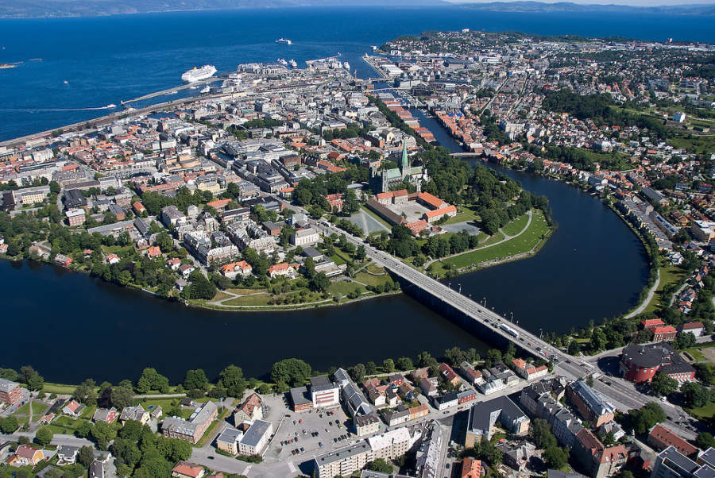
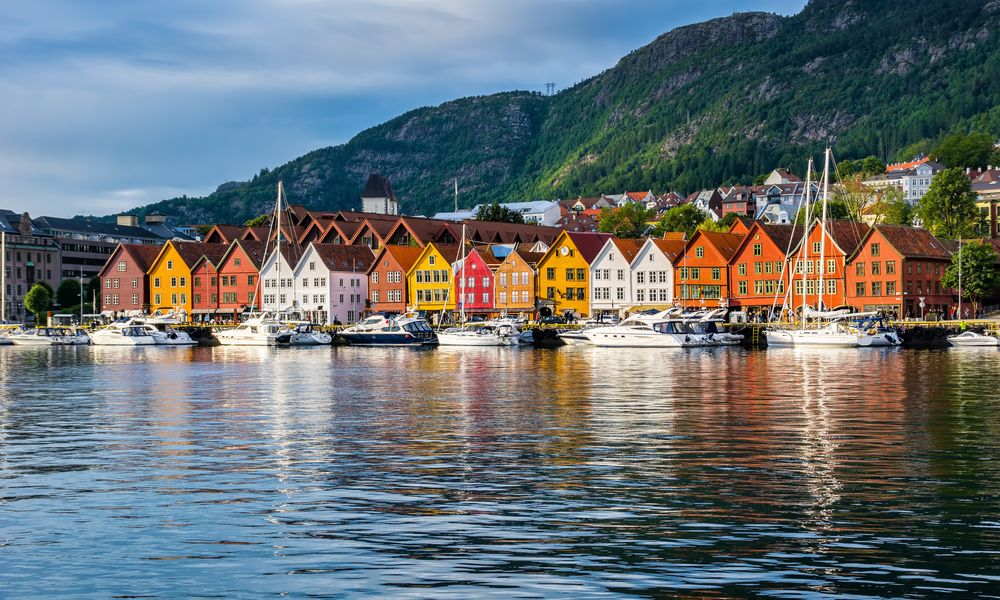
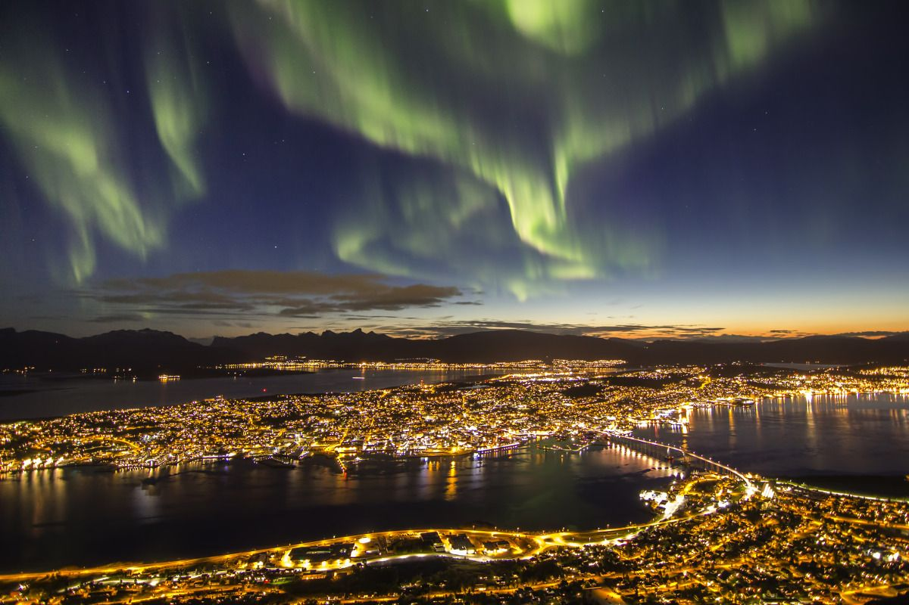

Trondheim
Trondheim es la tercera ciudad más grande de Noruega. La amplia variedad de actividades que puedes hacer aquí se debe en parte a los estudiantes, que son más de 30.000 en esta ciudad. Los estudiantes dejan su huella porque organizan muchos eventos, además de asistir a otras ofertas culturales de la ciudad.
Bergen
Su marisco fresco y otras exquisiteces locales encajan bien con una escena artística en ebullición, con numerosos museos y galerías. Las calles de la capital de los fiordos están llenas de casas de maderas propias de un cuento de hadas, con las siete montañas que la rodean como telón de fondo. El muelle hanseático de Bryggen, de origen medieval, cuenta con una sucesión de 60 edificios históricos. Esto le valió la inclusión en la lista de Patrimonio de la Humanidad de la Unesco. Algunas de estas estructuras se remontan nada menos que al siglo XII.
Tromsø
Unas cuantas calles principales bastan para darle a Tromsø un ambiente urbano e internacional, pero con un toque polar. Esta ciudad en la península de Tromshalvøya merece su apodo de la capital del Ártico, ya que en ella hay multitud de cosas que ver y hacer. Visita el centro Polaria, el Museo Polar, o la cervecería local Mack, que data de 1877. O admira las majestuosas ballenas, el sol de medianoche o las auroras boreales. Tromsø es la ciudad más grande del Norte de Noruega. Sin embargo, las escarpadas montañas que la rodean y los profundos fiordos están tan cerca del centro de la ciudad que puedes incluso admirarlos desde la calle principal.
